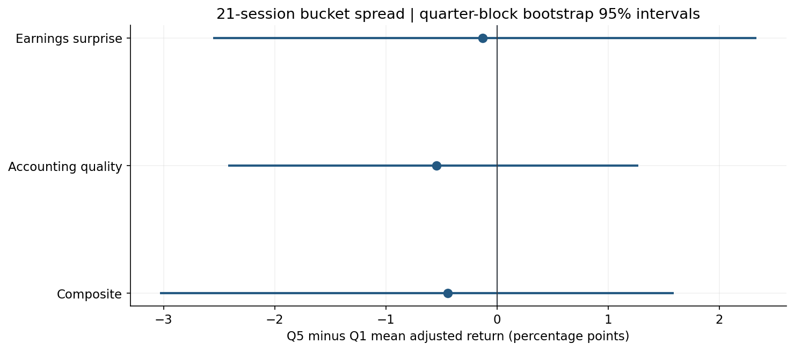
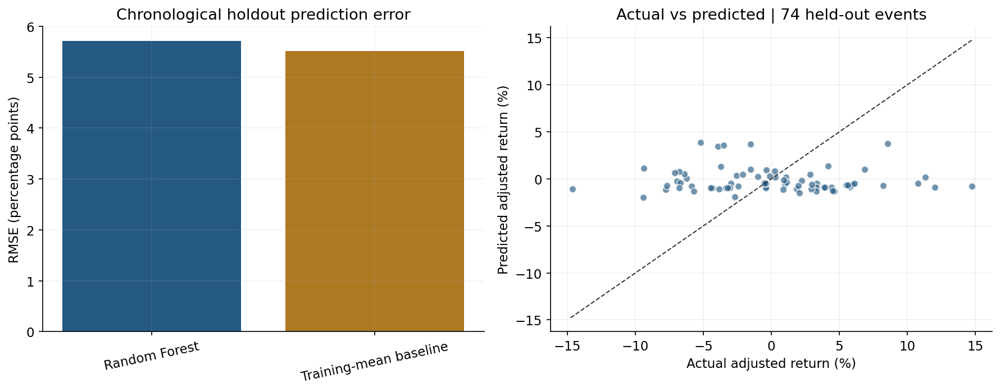

Completed study: 300 earnings announcements, 15 issuers, 2021–2025.
Open executed notebook · Observed findings · Methodology
Random Forest holdout RMSE: 5.72 percentage points; baseline: 5.51. No demonstrated predictive improvement.

